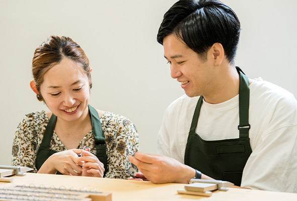
＼手作りならではの／楽しさ＆一生の思い出
お客さまご自身の手で手作りするからこそ、楽しさや面白さはひとしお。指輪が完成した時の達成感や感動も味わうことができ、指輪ができる過程まで、そのままお二人の特別な思い出になるはずです。
棒から作る結婚指輪・婚約指輪
鎌倉彫金工房の
手作り結婚指輪
東京蔵前
OPEN記念
キャンペーン
最大15% off
2026.8/3 — 2026.9/30
オリジナルリングケースプレゼント
対象店舗：鎌倉彫金工房 東京蔵前
※ご制作いただく日が期間対象となります
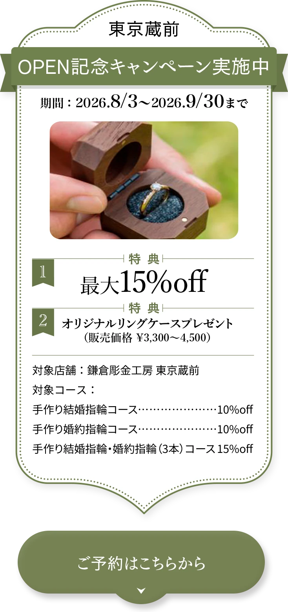
空席案内・予約フォームへ既成品やオーダーメイドとは異なり、指輪が完成した時の達成感や感動はひとしお。指輪ができる過程まで、特別な思い出として残すことができます。
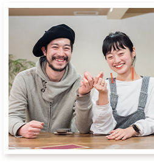

鎌倉彫金工房では鍛造製法を採用しており、指輪の型を作る鋳造と比べてお客さまに担当していただく工程が多く、作りがいも抜群です。

お客さまご自身の手で手作りするからこそ、楽しさや面白さはひとしお。指輪が完成した時の達成感や感動も味わうことができ、指輪ができる過程まで、そのままお二人の特別な思い出になるはずです。
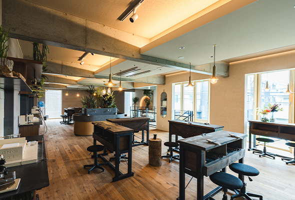
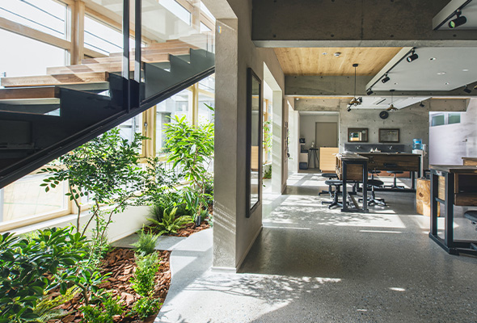
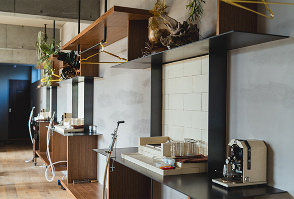
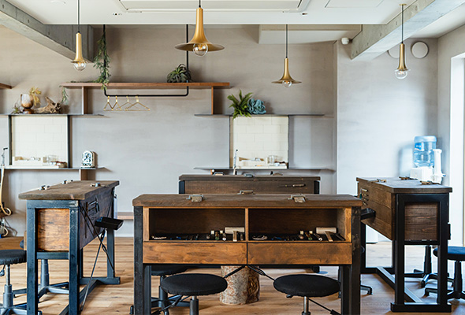
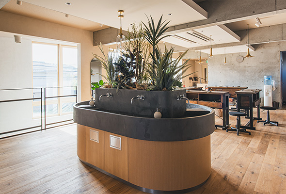
木を基調とした洗練されたインテリアと、アットホームなゆっくり落ち着いた雰囲気でお客さまをお迎え。心地よい空間で、じっくり集中して手作りの時間を楽しむことができます。
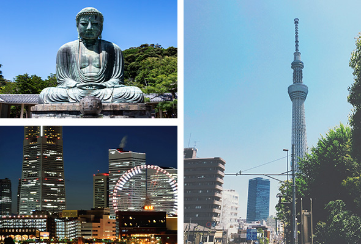
鎌倉彫金工房があるのは、鎌倉と横浜元町、そして東京蔵前。ついでに観光まで楽しめる最高のロケーションです。ゆったり情緒あふれる鎌倉や洗練された雰囲気の横浜元町、下町の魅力とおしゃれなカフェや雑貨が集まる東京蔵前など、お好きな店舗をお選びください。
当日は熟練の職人が丁寧にサポートいたしますので、手先が不安な方も心配ありません。さらにお二人らしさをプラスする、様々なオプション加工もご用意しています。
【デザイン例】
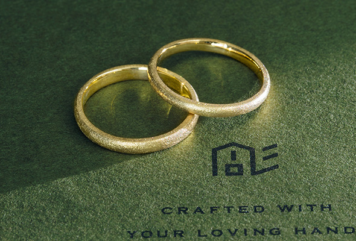
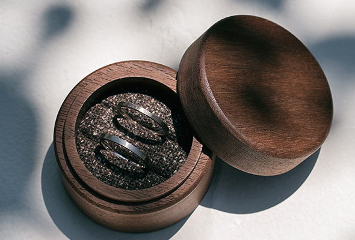
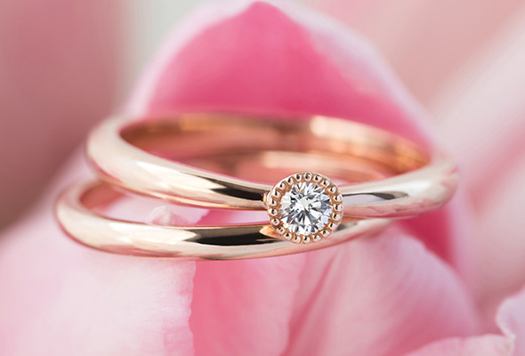
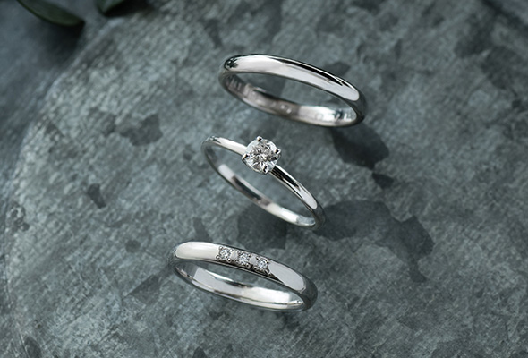
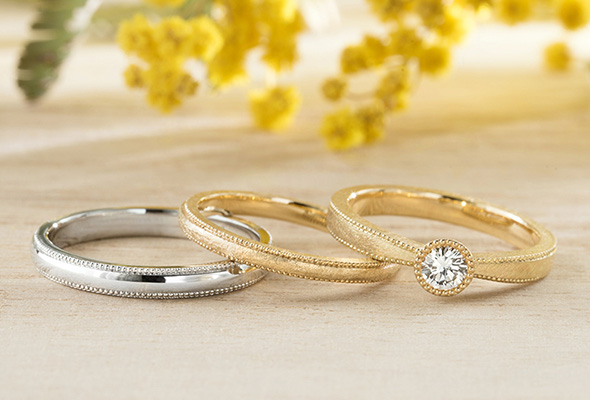
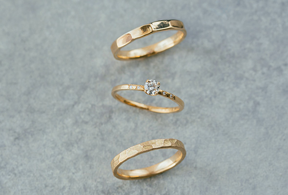
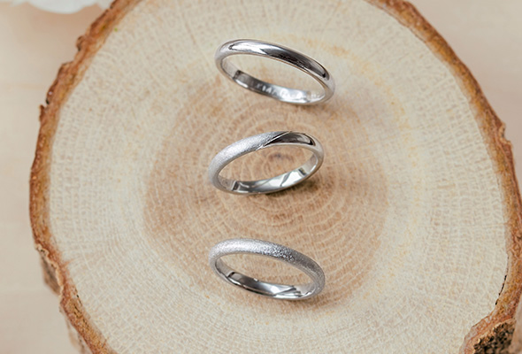
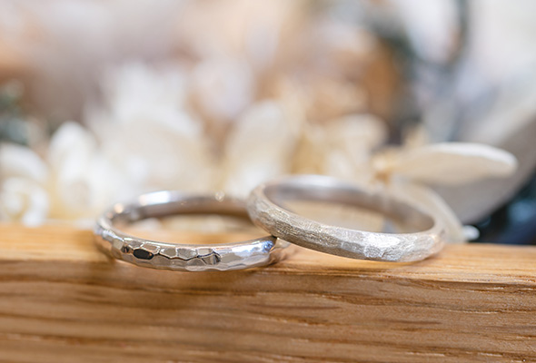
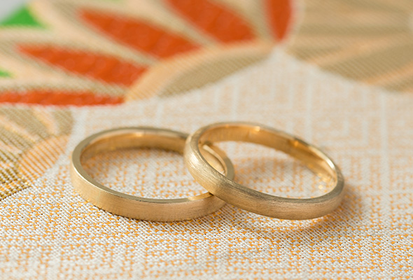
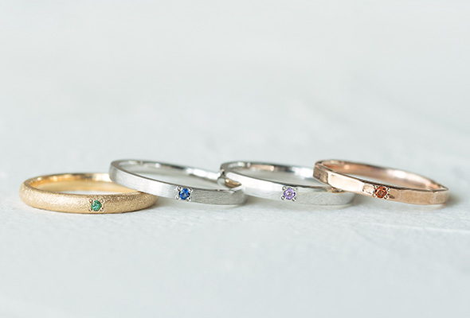
おもてなしで手作り結婚指輪の魅力をより一層引き立てるように。ジュエリー職人の、マニュアルのない心からの接客で、お客さま一人ひとりが心地の良い時間を過ごせるよう努めています。
当日お二人をサポートする
ジュエリー職人たち
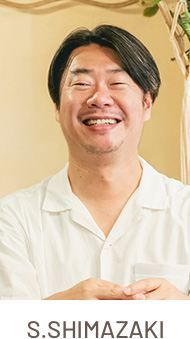
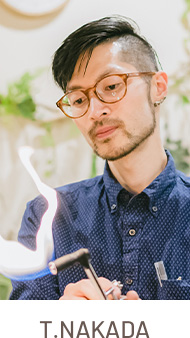
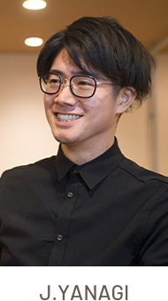
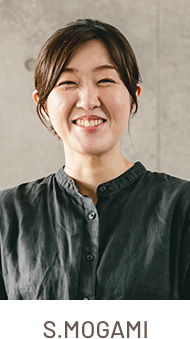
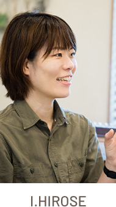
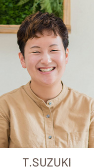
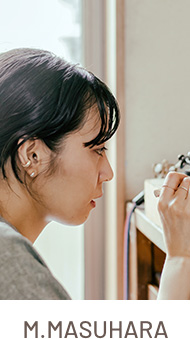
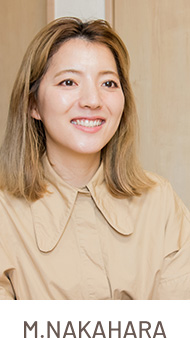
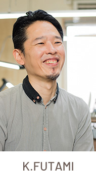
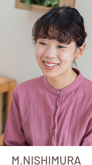
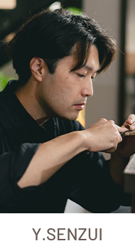
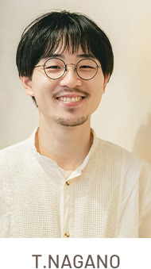
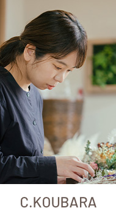
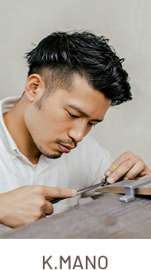
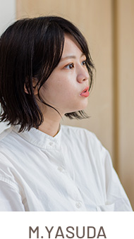
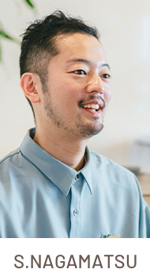
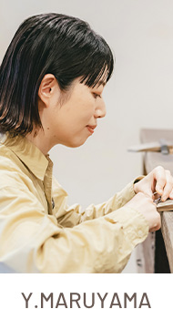
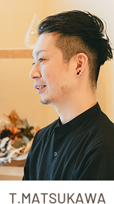
ちょっと大変。それが魅力。お客さまの指輪作りは熟練の指輪職人が
丁寧にサポートいたします
完全予約制を採用しています。ご予約専用フォームから空席状況をご確認ください。
サンプルや先輩作品をご覧いただき、素材やデザインを決めます。
棒状に伸ばした金属をリングサイズにあわせて切って、いよいよ制作開始です。
そのままでは硬い金属の棒を熱してやわらかくします（これを焼きなましと言います）。
やわらかくなった金属の棒を曲げ、端と端をつなげてバーナーで溶接します。
木づちでカンカン叩きながら、いびつなリングを真円にします。
複数のヤスリを使って仕上げます。石留めやその他のオプション加工がない場合は、ここで完成。そのままお持ち帰りいただけます。
※姉妹店を含む合計（2022年の1年間）
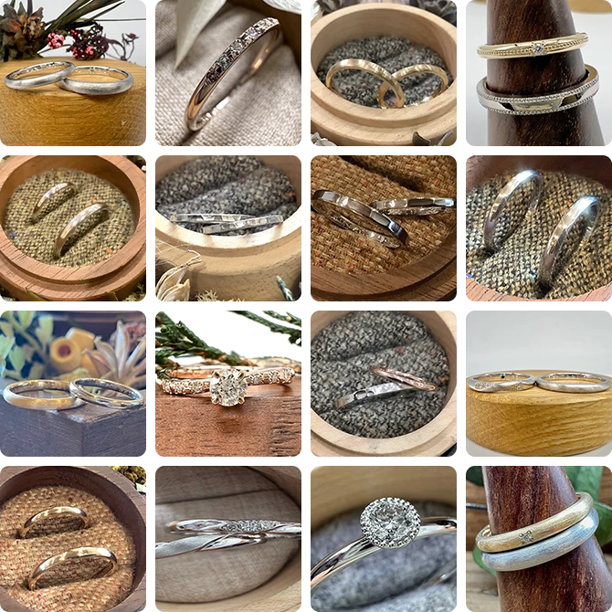


※1 当社調べ-掲載実績23,868件（2023/7/6時点）
※2 当社調べ
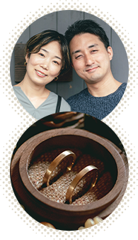
手作り結婚指輪を選んで良かったと感じるのは、一緒に作った時間が、思い出になって残るということ。それがこの指輪の一番の価値だとも思います。一緒にいなくても指輪を見るだけで相手のことや作った日のことを思い出せますし、相手を感じられる距離が一層近くなりますよね。
S様
指輪作りは初めてでしたし、手先が器用だったわけではありませんが、とても楽しかったです。没頭して、完成した後は達成感もありました。印象に残っている工程は、最後の光る瞬間。研磨剤をつけて磨いて、「めっちゃ光ってんじゃん」って。テンション上がりましたね。
H様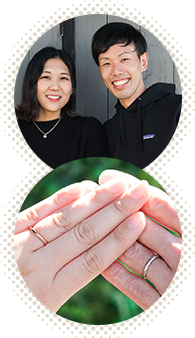
作業場っぽい、乱雑な感じをイメージしてましたが全然違っておしゃれな工房だったので驚きました。職場の人に手作りなんですと伝えたら、「え！まじで！こんなキレイにできるもんなの」と言ってくれました。自慢できますよね、棒から作ったんですよって。
M様ご心配いりません。経験豊富なジュエリー職人が完成までしっかりとサポートいたしますので、安心してお任せください。
結婚指輪は約3時間で完成します。完成の感動とともに、その日のうちにお持ち帰りください。なお、石留めやその他のオプション加工がある場合は、4〜5週間程度のお預かり期間を頂戴いたします。
永く大切に使っていただくために、鎌倉彫金工房の結婚指輪・婚約指輪は永久保証です。仕上げ直し、サイズ調整、変形直し、石の留め直し、クリーニングは、期限なし、基本無料でご利用いただけます（有料となる場合もございます）。
鎌倉・横浜元町・大阪中崎町・東京蔵前

鎌倉彫金工房 本店
神奈川県鎌倉市御成町14-29
鎌倉駅西口より徒歩3分
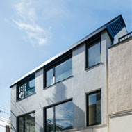
鎌倉彫金工房 横浜元町
神奈川県横浜市中区元町4丁目163-3 2F
※階段利用のみ（エレベーターなし）
元町・中華街駅5番出口（元町口）より徒歩5分

鎌倉彫金工房 大阪中崎町
大阪市北区中崎2丁目6-19
中崎町駅より徒歩4分
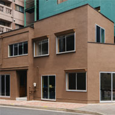
2026.8.3 OPEN !
鎌倉彫金工房 東京蔵前
東京都台東区駒形1丁目4-19
都営大江戸線【 蔵前駅 】A6出口より徒歩4分
OPEN記念キャンペーン対象店舗
最大15%OFF ＋ リングケース
期間：2026年8月3日（月）〜2026年9月30日（水） ※ご制作いただく日が期間対象となります